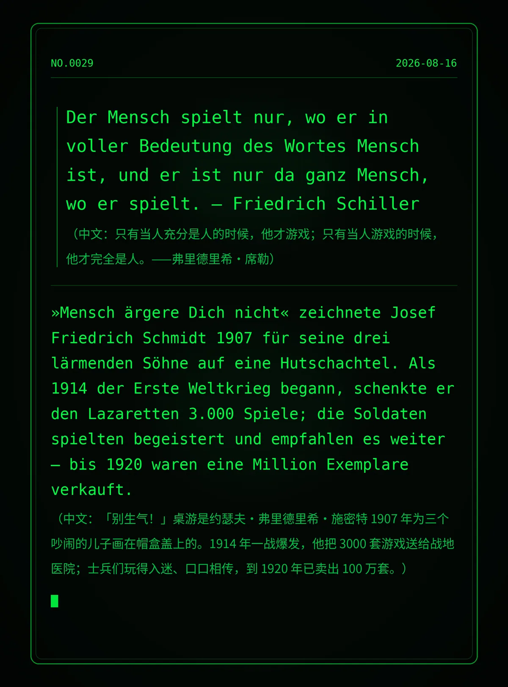

Der Mensch spielt nur, wo er in voller Bedeutung des Wortes Mensch ist, und er ist nur da ganz Mensch, wo er spielt. — Friedrich Schiller （中文：只有当人充分是人的时候，他才游戏；只有当人游戏的时候，他才完全是人。——弗里德里希·席勒）
»Mensch ärgere Dich nicht« zeichnete Josef Friedrich Schmidt 1907 für seine drei lärmenden Söhne auf eine Hutschachtel. Als 1914 der Erste Weltkrieg begann, schenkte er den Lazaretten 3.000 Spiele; die Soldaten spielten begeistert und empfahlen es weiter – bis 1920 waren eine Million Exemplare verkauft. （中文：「别生气！」桌游是约瑟夫·弗里德里希·施密特 1907 年为三个吵闹的儿子画在帽盒盖上的。1914 年一战爆发，他把 3000 套游戏送给战地医院；士兵们玩得入迷、口口相传，到 1920 年已卖出 100 万套。）
995ef8e8dcaa6cee冷知识由执笔的模型自行查证。逐条断言、来源与所引原句存档在纯文字副本里，未经程序逐字校验，留作事后核实。